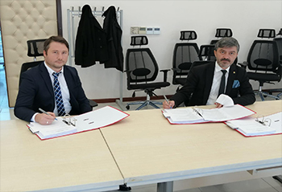

Haberlerimiz

Avrupa Birliği İnsan Kaynaklarının Geliştirilmesi Operasyonel Programı
Gerede Ticaret ve Sanayi odası ile yaptığımız çalışmaya 190.000 EURO bütçe
İlçemizin kurumlarından Bolu Abant İzzet Baysal Üniversitesi Gerede Meslek Yüksekokulu Deri Bölümü Öğretim Görevlisi Sayın, Recep SOLUK beyefendiye ve Milli Savunma Üniversitesi Deniz Harp Okulu Öğretim Üyesi Sayın, Dr. Musa MİLLİ beyefendiye projedeki destek ve katkılarından dolayı Teşekkür Ederiz.
Haberi Gör
Büyük veri
Büyük veri fırsatı
Yazılımcı ve Büyük Veri Uzmanı Musa Milli'nin kendi kaleminde çıkardığı yazı.
Makaleyi gör
İş Sağlığı ve Güvenliği
Akedemik Bakış Televizyon Programı
Şirketimizin gelişmesinde rol alan Ayhan Milli'nin verdiğimiz hizmetler içinde bulunan iş sağlığı ve güvenliği hakkındaki konuşması
Videoyu gör